张爱玲说过：“洋房是最合理想的逃世地方”，“住在一间宽大的洋房里面，唱片机里放着慵懒、磁性、柔软的蓝调，再倒一杯香槟慢慢的品味着，在宽大的阳台上晒着太阳……”这一派安然的画面，触动了多少人的心。
与自然为邻，伴着花香鸟语，和着风雨阳光的诗意盛景，是所有人为之憧憬的理想人居。但在城市空间日益逼仄，土地资源愈发紧张的现实中，一席低密花园洋房，似乎成为了奢望。张爱玲魂牵梦绕的洋房梦，在当代成空了吗？
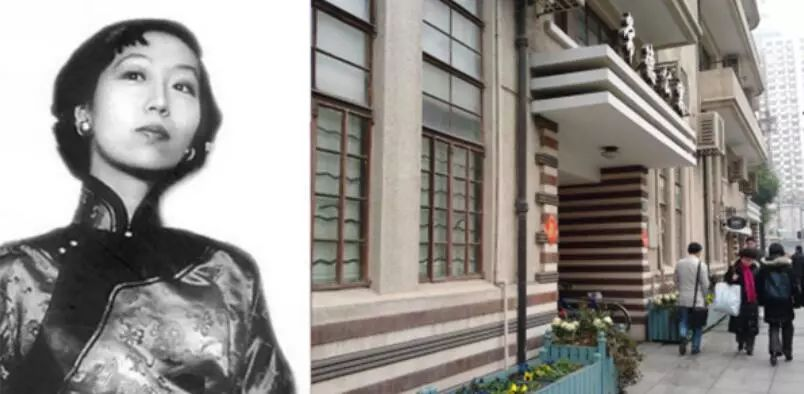
张爱玲和她的爱丁堡公寓（常德公寓）
◆ ◆ ◆ ◆
缘起
花园洋房之前世今生
拥城市与自然的天然统一
◆ ◆ ◆ ◆
一切要从花园洋房的缘起说起。
花园洋房，实际是西洋文明和生活方式与中国文化交织之产物，最早出现于上海，在19世纪中期，是为上海、福建和广东一带上流阶层的专属。从现在房地产定义观点来看，当时的花园洋房相当于目前房地产市场中的独栋别墅，主要特征就是采用层层退台的方式，保证户户露台，加大室内外的景观交流，放大居家的活动、情感空间。
但随着城市核心区域土地的日渐稀有，这类产品逐渐退居于郊野或地段位置偏远的地方，在阶段上可划归为第二代洋房产品，是为纯自然的产品。也正因为此，这类产品虽保证了自然要素，却因远离城市损失了生活的便利性，实用价值低下。
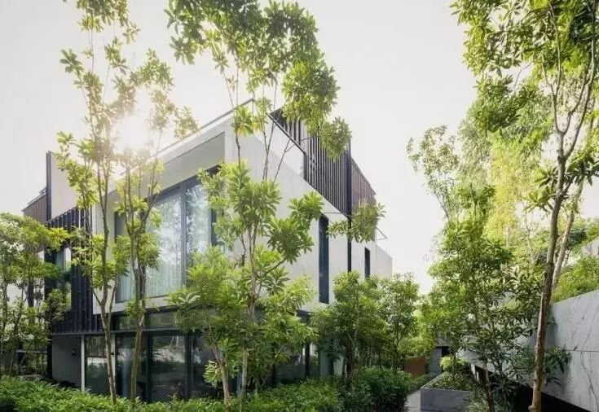
新加坡Asimont跃层洋房
是否有产品可以实现城市与自然的统一？这是第三代洋房产品——城市洋房的演化提前，这也是城市洋房目前被大众熟知的现代洋房品类。这类产品通常6-8层楼高，生长于城市景观环境较好的地段，或临河傍湖，或揽公园绿地；同时，又因生处城市，可享受到交通、商业、医疗、教育等城市生活配套，能兼具居住舒适感与便捷性。20世纪末期，城市洋房一兴起便得到了迅速传播，此后一直被人们视作理想人居的代名词。
◆ ◆ ◆ ◆
奢侈
花园洋房注定只被少数精英人士拥有
◆ ◆ ◆ ◆
花园洋房是奢侈的，占有城市土地，能接驳繁华，占有生态资源，与自然为邻，但对城市不可再生资源的极致占有，仅是花园洋房奢侈的开始。
关键点还是在项目规划及产品设计上。诸如其英文名GardenVilla，被花园包裹的住宅，整个社区像座花园，户户人家也要有私家花园。前者要求整个社区规划的低密，满足低容积率、高绿化率、大楼间距等多项指标；后者要求产品设计的舒适，大户型、大露台、大花园、大落地窗，讲究品质与尺度感。
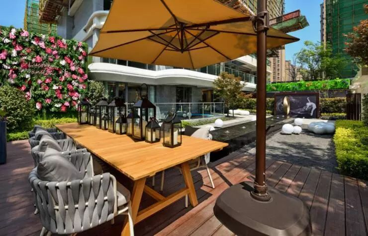
试想以下生活场景：被工作快节奏紧绷一整天的神经，在踏入花园城堡的那一刻起，舒尔豁然开朗；伴着园里的花草鸟语，踱步入户，通透的客餐厅外，与卧室相连的宽大露台上，红花绿草竞相斗艳、吐露芬芳，更让人无不惬意；信步其间，在花团锦簇中品茗、谈心，仰望天空之高远，俯瞰坡地之葱茏，纵有千般心绪，也会烟消云散。
这是花园洋房带给居者的极致生活，但这种奢侈的生活方式，注定只被少数精英人士拥有。目前，成都市场上的花园洋房，无论是跃层亦或大平层，户型面积均基本保持在150-200㎡之间，置业门槛非普通人能企及。
◆ ◆ ◆ ◆
平衡
在高层与别墅之间生长的品质比之王
◆ ◆ ◆ ◆
人们爱花园洋房，除其低密度带来的诗意生活，还在于花园洋房的高品价比。
花园洋房强调居住室内空间与室外环境有机结合，并且达到相一致的协调和匹配。住宅室内空间的面积，在尺度上既不讲求普通住宅的经济，也不追求别墅的铺张，而是满足一个舒适的度量，让居者能在总价可控范围内，享受到“类别墅”的高品质生活。这种兼具高层与别墅所长的高品价比产品，让很多人趋之若鹜，也一直被改善人群视作置业的首选目标。
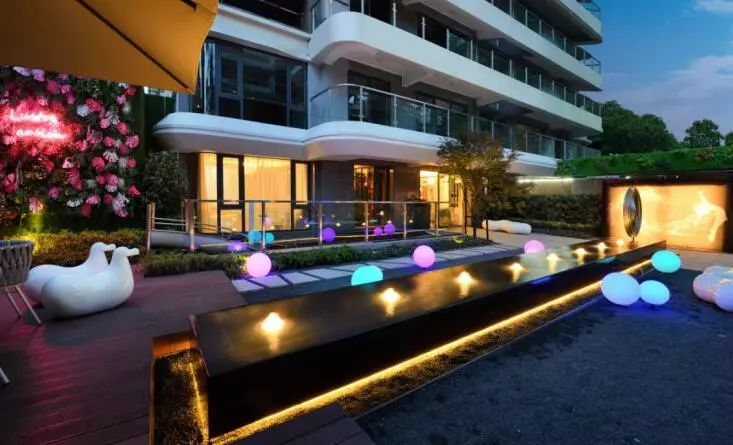
此外，花园洋房的高赠送比也让其更具竞争力。除却一般的飘窗、阳台赠送，花园洋房还会慷慨的赠送花园。平层业主，一般会赠送一定面积的私家花园或者类似的空中室外花园；一层业主，一般会赠送庭院花园或者是地下、半地下的庭院；而顶层业主，则将拥有顶跃半面积或整层的露台花园。
◆ ◆ ◆ ◆
市场
举目皆高楼的城南 发现低密花园真洋房
◆ ◆ ◆ ◆
早在1997年，成都银都花园首当其冲，第一次提出了建造高端花园洋房的概念。随后几年间相继推出的万科城市花园、中海名城、锦官新城等项目，均成了市场的热宠。2008年后，城市高楼四起，市场主流转为高层代之，稀数生长的华润翡翠城、左岸花都、观澜半岛等花园洋房项目，成了市场的稀有物种，魅力只增不减，备受精英人士追捧。
但业界普遍认为，伴随城市的开发及土地资源的减少，洋房项目会越来越稀缺，尤其是在近几年大步向前的国际城南。“举目皆高楼”似乎成了人们对城南的固有印象。
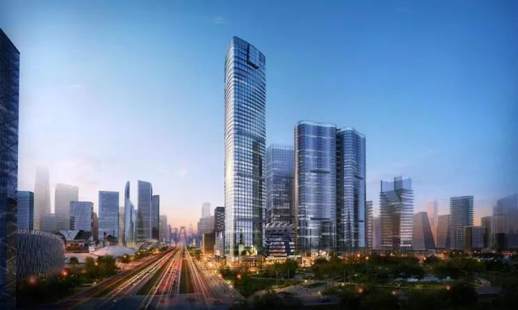
成都金融城
好在德商·御璟天骄的出现。红星路南延线旁，金融城南新川央心之巅，7座南北布排的20余米小洋房在高楼间显得格外特别，这是德商高端豪宅产品天骄系的全新升级之作，主打城市低密花园洋房。
为做到真正的低密纯正洋房，德商·御璟天骄整个项目21000㎡的地面上，住宅仅规划有202户，包含7栋洋房及1栋高层，住宅容积率低至1.6，洋房楼间距达30米。同时，区别于市面上大多9+1、10+1，11+1甚至楼层更高的“假洋房”，德商·御璟天骄以纯正的6+1标准诠释真正的花园洋房，是目前城南甚至大成都范围内都罕有的产品。
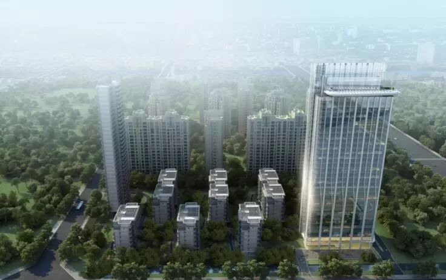
德商·御璟天骄效果图
而项目的低密也让公共区域有了更多发挥的空间，整个小区有70%被园林所覆盖，打造了七座水晶花园，分别以各种花艺为主题，每座都不一样，此外还有600㎡的镜面叠级水景、200米蓝花楹和红豆杉树阵景观中轴，让每一栋楼都生长在花园里，让每一户业主都能私享到四季风景。
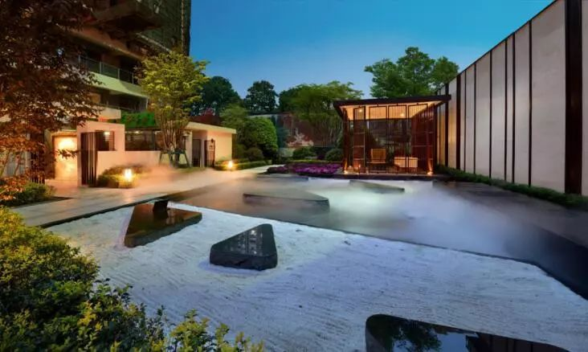
德商·御璟天骄底跃实景图
◆ ◆ ◆ ◆
德商·御璟天骄
合乎深改人群理想的栖居之所
◆ ◆ ◆ ◆
从项目定位来看，德商·御璟天骄的纯改善属性十分清晰，那么产品究竟如何？
近两年，凭借德商·学府天骄、德商·御府天骄、德商·迎晖天玺等多个高端住宅产品，德商一跃成为“楼市黑马”，逐步培育起了其高端豪宅打造的实力与品牌。而此次推出的德商·御璟天骄，虽命之为“天骄系”，却又因承袭“天玺”设计血脉被业内美名为“小天玺”，汇集各路大师之精华。
如建筑设计的点睛之笔外立面，由全球第二大建设设计事务所ADAES设计，以极具时尚感的横竖线条及替代传统硬转角热弯玻璃作为墙体骨架，打造区域非凡的立面效果。又如由荷兰知名设计事务所D/DOCK操刀的室内设计，中央空调出风口的雕花、洋房产品的天然石材地面和门槛石等细节，无不彰显着居家的美感与居者的尊贵。
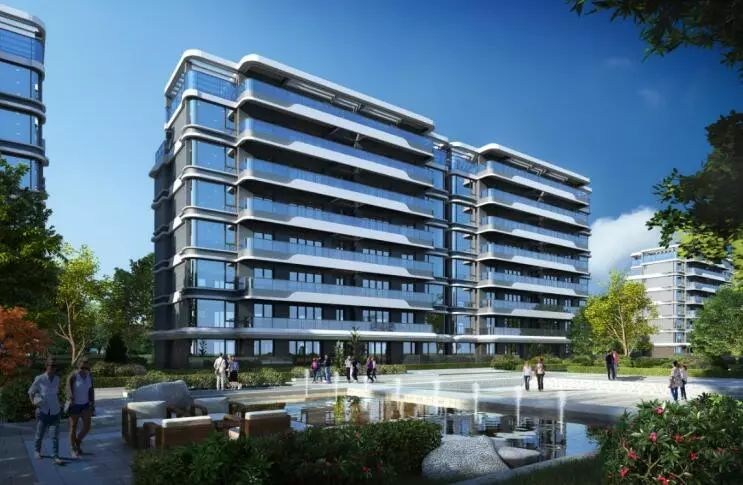
德商·御璟天骄效果图
户型方面，德商·御璟天骄高层住宅共有32层，采用2梯2户的设计，建筑面积149平方米，四房双卫。洋房产品为7层，采用1梯2户、电梯入户的设计，面积段为147-287平方米，包含底跃和顶跃产品。而无论高层亦或洋房，全部纯板式结构，南北通透。具体户型图如下：
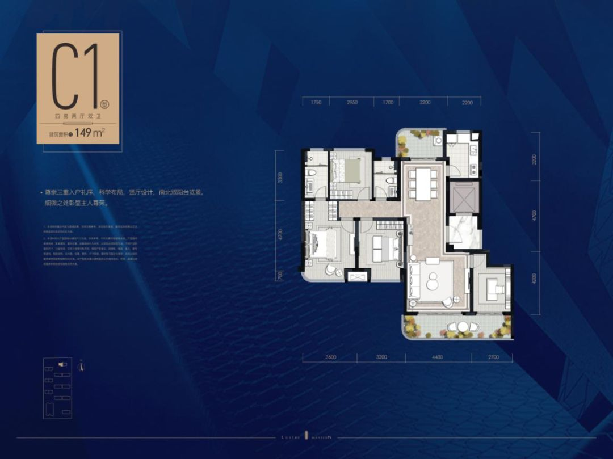
高层户型：建筑面积约149㎡
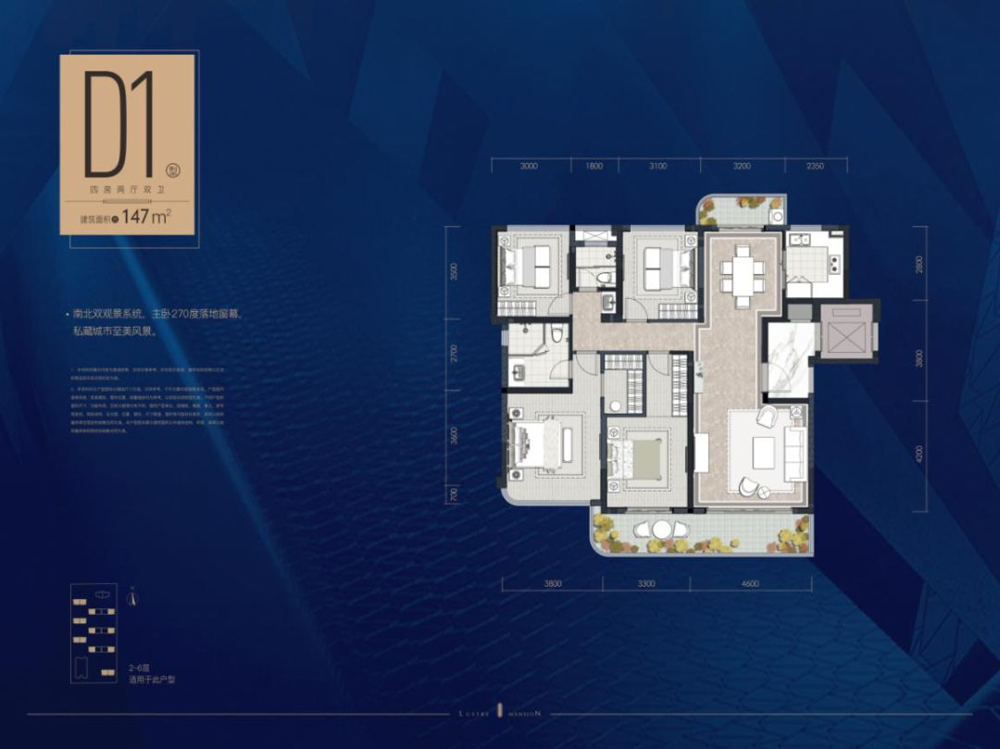
洋房中间层户型：建筑面积约147㎡
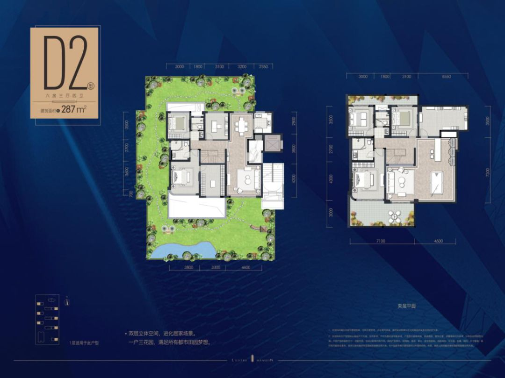
洋房底跃端头户型：建筑面积约287㎡
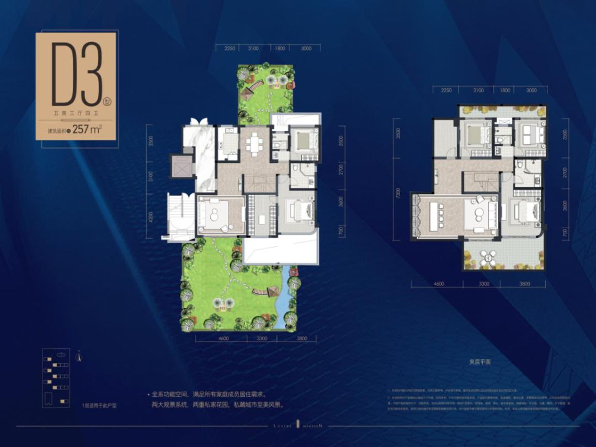
洋房底跃中间户型：建筑面积约257㎡
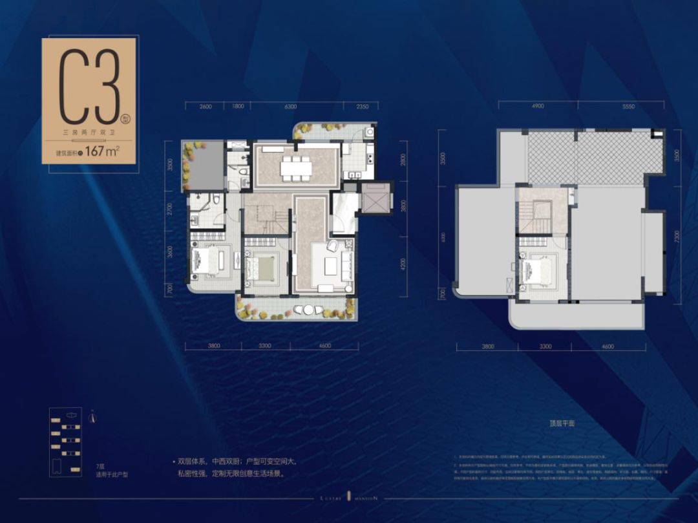
顶跃户型：建筑面积约167㎡
据了解，德商·御璟天骄所有住宅产品都将于本次一同推出，精装交付。在精装风格方面，高层产品采用的是现代轻奢的装修风格，洋房产品采用的是浪漫法式的风格。而规格方面，所有住宅产品中都标配了新风、地暖和中央空调系统，且均为高仪、杜拉维特、汉斯格雅、西门子等国内外一线品牌。
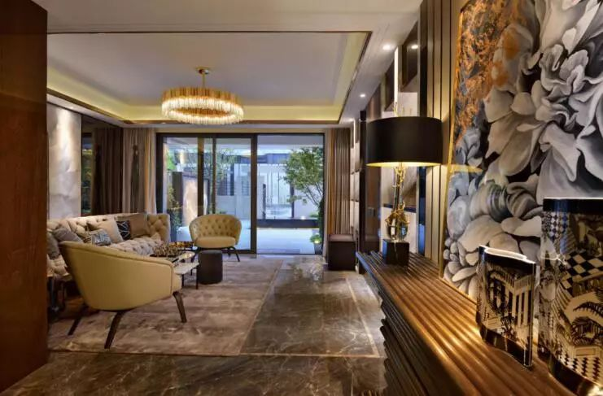
德商·御璟天骄样板间实景图
同时，对位于社区的精英阶层，德商·御璟天骄还打造了一所只针对业主和会员使用的ONEClub天际会所，包含云端健身房、瑜伽馆、网红酒吧、私宴厅、商务会议厅等业态。此外，结合中西方精英圈层生活习惯，御璟天骄将采用“6M”尊贵物业服务，为业主打造品质的社区配套服务。
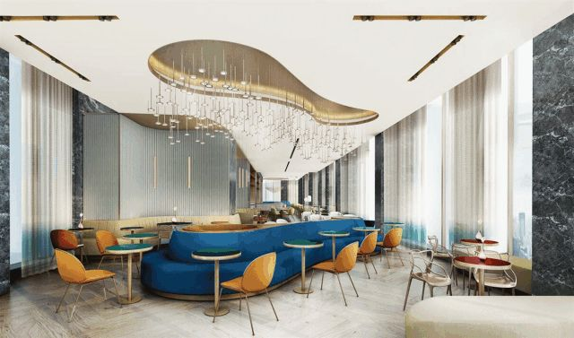
德商·御璟天骄ONEClub天际会所
讲到这里，张爱玲魂牵梦绕的洋房梦，似乎有了着落，而一席低密花园洋房，也不再无路可寻。持币待购的城南改善置业者们，有着6+1的真豪宅产品、住宅1.6的超低容积率，以及“天际会所”+“6M”尊贵服务加持的德商·御璟天骄，就是合乎你理想的栖居之所。
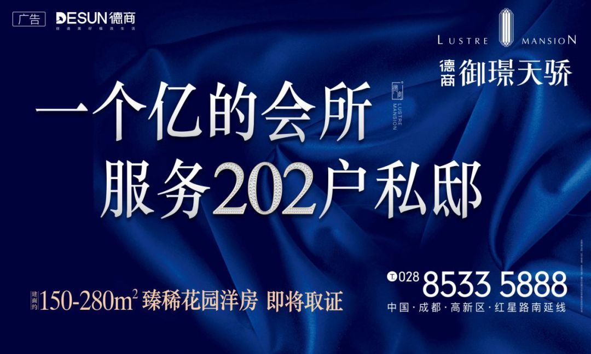
面积
高层：149㎡
洋房：147-287㎡
项目地址
成都·高新区·观东三街158号
咨询电话
028-85335888
广告